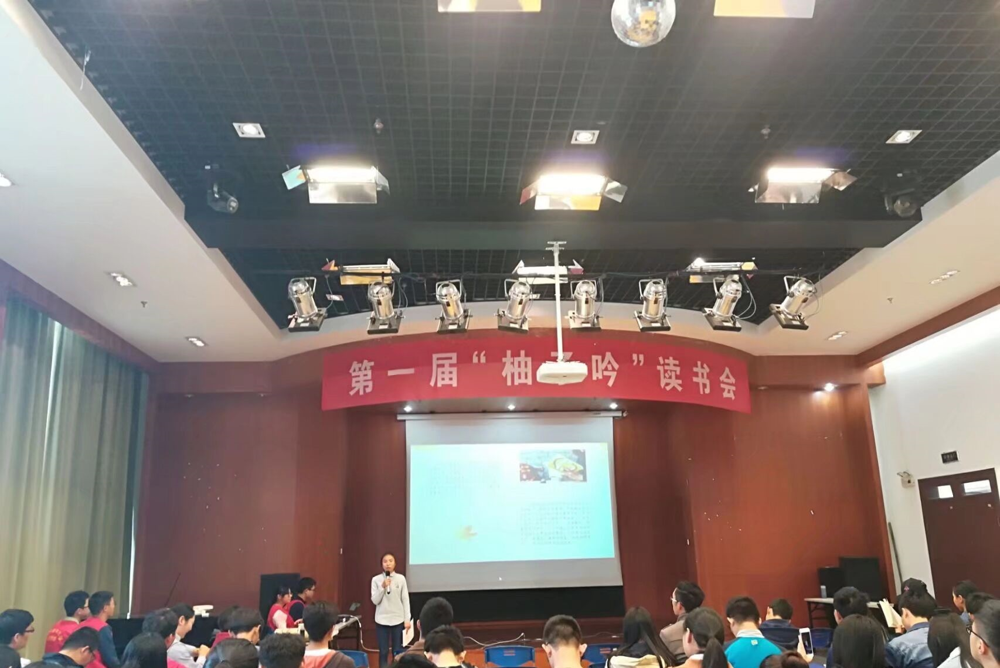
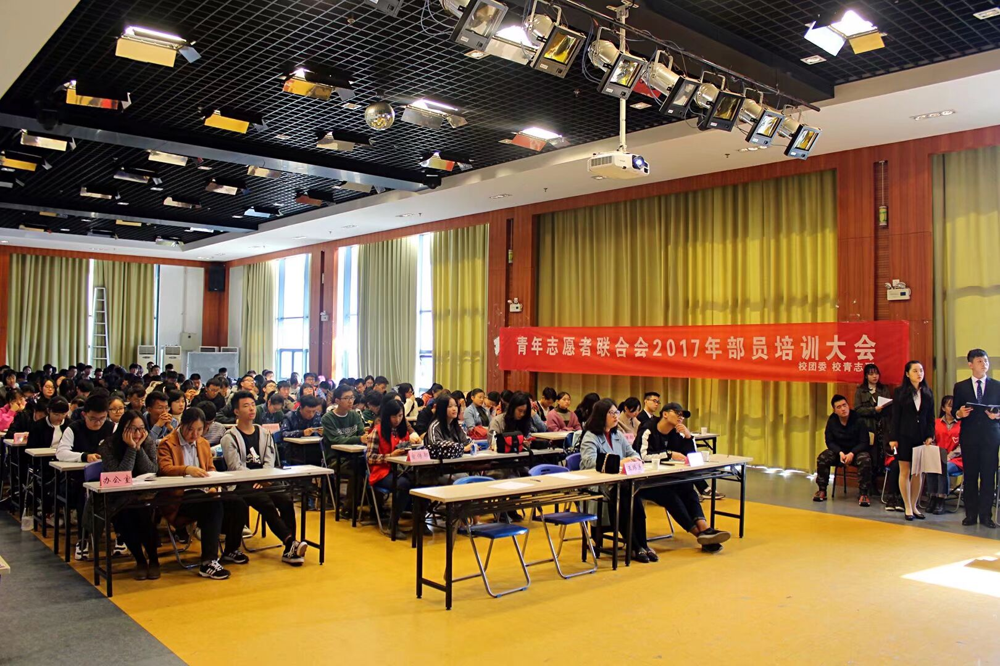
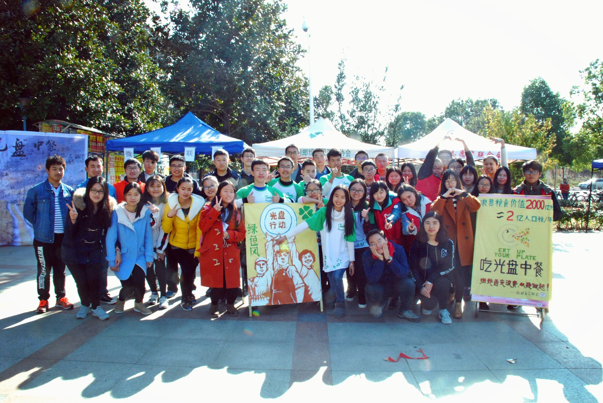
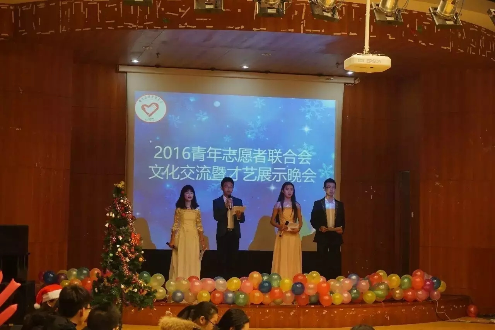

南 京 邮 电 大 学 青 年 志 愿 者
联 合 会
NUPT Young Volunteers Federation
你想要的青志联资讯，都在这里！
-

公示 | 南京邮电大学青年志愿者联合会禁毒志愿者协会简介及第一届学生干部名单公示
2017-6-10
南京邮电大学禁毒志愿者协会成立于2017年5月，隶属于南京邮电大学青年志愿者联合会，是由校团委指导，开展禁毒宣传与禁毒活动的公益性社团。协会宗旨：禁毒志愿者协会秉承“抵制毒品，从我做起”的宗旨，奉行“奉献、友爱、互助、进步”的志愿者理念，组织、协调校内禁毒志愿者参与禁毒工作，积极开展禁毒志愿服务，为禁毒公益事业做出贡献。禁毒志愿者协会下设理事会，理事会下设行政中心、活动部两个部门。理事会作为禁毒协会的领导者，承担着上传下达、统筹规划和引导协会稳步发展的责任；行政中心作为协会的枢纽，协调沟通各项事务的进行；活动部作为公益服务的主力军，组织开展校内外禁毒公益活动的进行。
-

柚子吟 ｜ 秋风秋意秋暖晴，拾叶成书柚子吟
2017-10-29
秋天，是秋月朗朗，鹊桥飞渡；是枫叶萧萧，秋蝉默默。秋是落叶对根的情思，是大雁对长空的向往，秋天给人的境界是深远的，亦会牵起人的无限思绪，或愁绪，或思乡。为了能同大家在这十月一起阅读交流、感悟生命、共同成长，10月29日下午，青年志愿者联合会邮书项目组在大活三楼团校举办了第一届"柚子吟"读书会。首届"柚子吟"面向青志联内部开展，各部门小伙伴都积极参加，用我们的志愿之心在这凉凉秋风中传递暖意。 "一叶知秋"，参加读书会的同学们于进场前都收到了一份邮书组手工制作，写有"柚子吟"的叶子书签，作为纪念。书签虽小，却满满都是心意。此次读书会，由邮书项目组组长杨童担任主持工作，主持人首先对邮书组"柚子吟"及"邮墨书香"两项活动进行简要的介绍，它们都旨在激起大家读书、惜书、爱书的情感，营造读书氛围。
-

志愿资讯 | 南京邮电大学青年志愿者联合会部员培训大会顺利举行
2017-11-11
青志联部员培训大会于2017年11月11日星期六在我校大学生活动中心多功能厅举行，上午9点30分，大会正式开始。 为加强2017届新部员对青志联工作的了解，提高整个新干事团队的综合素质及工作效率，凸显校青志联志愿服务的专业性，青志联特此举办部员培训大会。 首先由考评部部长尚宇阳发言，介绍了本次大会的目的：旨在为新部员提供全面深入的培训项目来加强新部员对青志联的深入了解，提高工作效率，以更好地适应接下来的社团工作。紧接着，她详尽地介绍了南邮校训及南邮精神的内涵，让同学们对其有了更加深入的了解；同时，她也在发言中将青志联部门项目的整体框架一一向新干事们阐释清楚，并介绍了各部门职能和常规工作情况。
-

【志愿活动】吃“光盘”中餐，我们一起来！
2016-12-2
阳光明媚的一天，太阳暖暖的洒在身穿红马甲的志愿者们的身上。中午11点后，集赞的同学已经陆陆续续来到帐篷前啦，热情的青志联宣传部的小伙伴们一一为集赞的柚子们发放敲可爱的南邮定制书签。书签很特别，但最最激动人心的还是抽奖活动啦。看到柚子们抽奖时紧张激动的表情，现场的志愿者们也都跟着吸气。抽中的同学们，小编为你们的光盘行动点赞，也为你们的幸运喜悦！ 现场还有绿色风和微动联盟的小伙伴给大家准备了小游戏，还原打乱的拼图和用长筷子夹黄豆到另一个碗里就可以赢取薯片等小零食哦。柚子们参与游戏的积极性很高，现场一片欢声笑语！ 当你微笑地接过我递给你的马克笔，在签名板上留下了你的姓名，岁月也变得静谧。
-

【志愿撷趣】你不知道的事之青志联内部联谊艺术表演
2016-12-25
2016年12月24日， 青年志愿者联合会文化交流暨才艺展示晚会在大学生活动中心多功能厅成功举办。青志联全体在下午两点 准时迎来了联谊的开始， 大家紧挨着坐在一起， 俨然像一个温暖的大家庭。四位主持人窈窕潇洒， 诗情画意地迎上来了 一个个精妙绝伦的节目。 每个部门和项目组都大展才艺， 三牌楼首先上台， 气氛活跃到点燃空气。从对学妹到嫂子身份转换的吐槽， 一个个吐槽期末的辛酸， 到欢乐滑稽的课堂， 咋了爸爸融合papp的灵魂舞蹈， 不断将晚会推向一个又一个的高潮。
-
外联部
青志联对外沟通的桥梁青志联展示真我风采，分享志愿心得的排头兵。其主要工作紧紧围绕企联，校联，公益联展开，不仅在校内组织各项活动，服务于大学生和志愿者，还与各个院系，各大高校、社会企业及慈善组织保持积极联系，沟通志愿心得。
-
办公室
青志联的枢纽部门主要负责各部门、各项目队之间的沟通与协调。主要职能有各种规章制度的制定，会议安排，财务管理，文档汇总及保管等，着力于青志联内部标准化建设，把内部工作细致化、效率化的同时也促进了各部门之间的交流。
-
宣传部
志愿活动的先锋队志愿活动对外显示的窗口。这里汇集了有书画艺术特长的同学们，为许多艺术爱好者提供交流的平台；这里也是技术性志愿者的一个家，包括了图形设计、视频制作和web建站等多种方向，肩负青志联各大活动宣传的重大使命。
-

志愿工作部
十个志愿性项目构成的核心力量青志联2015年推出的一个志愿活动，前期称为微音助盲，主要通过微信平台展开相关工作。志愿者定期接受金陵图书馆的相关培训，通过声音的传递献出爱心，声音作品将刻录成光盘提供给需要帮助的人。
活动项目||青志联活动大放送
柚子们是不是想成为行走在南京各处的红色志愿者中的一员呢？不论是南邮校园里还是栖霞区、下关区、鼓楼区、等等都有青志联志愿者们的身影哦！
每个月我们都会放出活动预告哟，想参加的柚子们赶紧联系我们吧！
- QQ群
- 微信公众号
- 张涵宇
- 郭亚旻
- 李泽铭